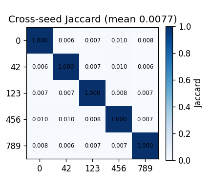

1 · Introduction · Explainable & Trustworthy AI · Project · Politecnico di Torino
Characterization of MedConcept Limits to a 2D BiomedCLIP Adaptation.
Marc'Antonio Lopez · Nicolò Colle · Carmine Francesco Benvenuto
Part 1 of 3 · Nicolò Colle
1 · Introduction · The problem
Medical VLMs are accurate but opaque.
The internal representations are high-dimensional, polysemic and unreadable. A serious concern in
safety-critical clinical use.
§1 Introduction
Part 1 of 3 · Nicolò Colle
2 · Related work · Approach
Concept-based XAI: from supervised to unsupervised discovery.
Supervised
Concept Bottleneck Models (Koh 2020) and TCAV (Kim 2018) need a pre-defined, labelled concept set — exactly
the limitation unsupervised discovery targets.
Sparse Autoencoders
Bricken et al. (2023): dictionary-learning on activations yields monosemantic latents. The Top-K SAE (Gao
2024) sets L₀ exactly via top-k gating. We adopt it.
MedConcept (Haque 2026)
SAE extraction → alignment to a radiology vocabulary → an LLM-judge with Aligned/Unaligned/Uncertain metrics.
Bricken et al.2023 — Towards
Monosemanticity with Dictionary Learning
Gao et al.2024 — Scaling and
Evaluating Sparse Autoencoders
Haque et al.2026 — MedConcept
Blankemeier et al.2024 — Merlin 3D CT
Foundation Model
Part 1 of 3 · Nicolò Colle
3 · Research gaps · Research gaps · in the paper's order
Six gaps this work addresses.
GAP 1
Instability / non-identifiability
Sparse factorisations are not reproducible across seeds; no prior medical-VLM work reports seed-stability
against a null.
GAP 2
Clinical validity
A cosine-assigned name is cosmetic unless it tracks real pathology.
GAP 3
Representation-location mismatch
SAE literature uses raw hidden states; reference pipelines fit on the already-projected, gap-bearing CLIP
space.
GAP 4
Small-data robustness
SAEs need 10⁵–10⁶ activations; licence-free medical corpora are 2–3 orders smaller.
GAP 5
Flat concepts
Explanations are top-k lists that ignore anatomical / hierarchical structure.
GAP 6
Non-reproducible evaluation
Claims rest on single metrics whose chance floor is never reported; slot-wise overlap is degenerate under
per-seed permutation.
§3 Research gaps
Part 1 of 3 · Nicolò Colle
4 · Methodology · Backbone & vocabulary
Our Adapted Architecture.
Instead of 3D Merlin, we use the 2D BiomedCLIP as backbone. Its image encoder exposes a 768-d
hidden state that a frozen projection compresses into the 512-d contrastive space. Features are named
against domain-matched vocabularies: RadLex for IU X-Ray (chest-specific), MeSH for ROCOv2
(multimodal). Before of this, we correct the modality gap.
For each decoder row of seed A, take its best cosine match across all rows of seed B,
then average. Feature order does not matter — that is what makes it a real stability measure.
Seed A · decoder rows
↔
Seed B · decoder rows
Best-match cosine, averaged over rows. Permutation-invariant by
construction.
Impl: src/autoencoder/stability_analysis.py
Part 2 of 3 · Marc'Antonio Lopez
4 · Methodology · Evaluation · Gap 6 (2/2)
A null conditioned on effective rank.
Real decoder directions live in a subspace of effective rank ~357 — not the ambient 512. We
draw null vectors inside that subspace, so the comparison is honest. An isotropic full-512 null would
inflate the ratio.
5 · Experiments and analysis · The headline result · Gap 1
1.81×1.67× IU X-Ray · 1.81× ROCOv2
The baseline SAE reconstructs its inputs well — but cross-seed feature identity is
absent: best-match barely above the conditioned null. Genuine non-identifiability, not a training bug.
Part 2 of 3 · Marc'Antonio Lopez
5 · Experiments and analysis · Baseline · Tab.1 · Gap 1
Good reconstruction, absent identity.
Cross-seed stability, baseline Top-K SAE
Indicator
IU X-Ray
ROCOv2 (10×)
Reconstruction cosine
0.99
0.97
Matched obs / null
1.67×
1.81×
Matched cosine (raw)
0.299
0.327
Features matching ≥0.9
0.0%
0.3%
Naming (top-1 cos)
0.40
0.48
Part 2 of 3 · Marc'Antonio Lopez
5 · Experiments and analysis · Relabeling control · Gap 6
Slot-wise is floor-by-construction.
Rename one SAE’s features with a random permutation — same network, same reconstruction —
and slot-wise Jaccard collapses to the 0.0077 floor. The matched metric correctly sees identity.
Impl: scripts/relabeling_control.py

Cross-seed Jaccard (IU baseline). Mean ≈0.0077 — the analytical floor.
Contribution (1) — Relabeling Control
(This Work)
Part 2 of 3 · Marc'Antonio Lopez
5 · Experiments and analysis · Path A (768-d) vs baseline · Gap 3
A healthier decomposition — same verdict.
Path A trains on the hidden state before the projection. Fewer dead features, better
naming — but the matched verdict is unchanged: weak universality, a shared subspace, not identical
features. Still the pooled CLS token.
Lan et al.2024 — Feature Space
Universality via SAEs
Leask et al.2025 — SAEs Do Not Find
Canonical Units
Part 2 of 3 · Marc'Antonio Lopez
5 · Experiments and analysis · Path A · ablation · Tab.3
No overcompleteness escapes weak universality.
Matched obs / null vs dictionary overcompleteness
Dictionary D
Top-k
obs / null
1024
16
2.78×
2048
32
2.63×
4096
64
2.00×
More overcomplete → ratio drops toward the null. No setting is
identifiable.
Part 2 of 3 · Marc'Antonio Lopez
5 · Experiments and analysis · The scale hypothesis · Gap 4
10×ROCOv2 ~80k vs IU X-Ray ~7k
Ten times more data improves training health (dead 16%→0.6%) but not
identifiability — matched 0.299→0.327, ratio 1.67×→1.81×. Binding constraint = representation site,
not volume.
Part 2 of 3 · Marc'Antonio Lopez
5 · Experiments and analysis · Path B · SPLiCE · Gap 1+4
Deterministic. Judge-ready.
Decompose each embedding into a sparse, non-negative combination over a fixed domain-matched
dictionary (RadLex / MeSH). Never estimated → deterministic by construction, zero cross-seed
instability.
Fixed dictionary — no estimation, no seeds, no instability.
Same output schema as the SAE — the same judge scores it.
Honest caveat — frequent terms are "mixed" (a dictionary property).
Bhalla et al.2024 — Sparse Linear
Concept Embeddings (SpLiCE)
Part 2 of 3 · Marc'Antonio Lopez
5 · Experiments and analysis · SPLiCE · scale + gap correction
Scales to both corpora. Gap is the fix.
SPLiCE coverage and modality-gap correction
IU X-Ray
ROCOv2
Dictionary
RadLex · 1031
MeSH · 1024
Terms used
997
1024
Images decomposed
1,515
15,958
Runtime
9.5 s
101 s
Max atom–img cos (gap-corrected)
0.49 → 0.85
0.54 → 0.86
Part 2 of 3 · Marc'Antonio Lopez
5 · Experiments and analysis · Concept organisation · Gap 5
Dense, but weakly separated.
Cluster the active vocabulary into concept families via ontology ancestors (RadLex / MeSH) +
two degeneracy guards: leaf-root rejection and a subtree canopy that rejects overly generic ancestors. SPLiCE cuts
concepts-per-image ~1.75×.
Organisation results · Tab.4
Method
Concepts
Families
Silhouette
SPLiCE (IU)
997
32
0.020
SAE baseline (IU)
80
9
0.094
Path A hidden (IU)
14
4
0.284
SPLiCE (ROCOv2)
1024
32
0.066
Impl: src/concept_discovery/organize.py · Path A hidden: 1260/1515 images empty
Part 3 of 3 · Carmine Francesco Benvenuto
5 · Experiments and analysis · Judge Models
Three judges, three different biases.
MedGemma 4B
Domain-specialised medical LLM. Exhibits a systematic positive bias, rating all methods (including the
random null control) at ~80% Aligned.
Llama 3.1 8B
General-purpose instruction-tuned LLM. Defaults to Uncertain (~96% on IU X-Ray), showing low
discriminative power on small datasets.
Gemma 4 26B
Large general-purpose LLM (4-bit). Shows a strong rejection bias, rejecting 87% of all baseline pairs
as Unaligned.
Sellergren et al.2025 — MedGemma-4B
Haque et al.2026 — MedConcept
(LLM-as-judge)
Part 3 of 3 · Carmine Francesco Benvenuto
5 · Experiments and analysis · Results Matrix
MedGemma vs. Llama 3.1: Aligned Rates.
Extracting from the exhaustive evaluation on IU X-Ray (1,508 pairs).
MedGemma rates nearly everything as "Aligned", even random assignments, failing the null control. Llama 3.1 is
highly uncertain overall.
Explanation Method
MedGemma 4B
Llama 3.1 8B
Baseline (512-d)
81.17%
0.86%
SAE Hidden (768-d)
76.26%
0.46%
SPLiCE
81.56%
3.25%
Null (Random)
81.17%
2.65%
Part 3 of 3 · Carmine Francesco Benvenuto
5 · Experiments and analysis · Judge Models · Limitations
Why the judges fail.
Both models lack the discriminative power required for a reliable evaluation on medical domains, but
for entirely different reasons.
MedGemma 4B: Catastrophic Positive Bias
It defaults to "Aligned" regardless of semantic content. It approves random noise at ~80% (failing the null
control). It is fundamentally incapable of distinguishing true signal from noise in this specific setup.
Llama 3.1 8B: Extreme Uncertainty Bias
Defaults to "Uncertain" (~96% on IU X-Ray). This suggests it either cannot reliably parse the structured
verdict format, or it genuinely finds the generated pseudo-reports too ambiguous. Scale helps (better on ROCO
v2), but it remains highly conservative.
High computational cost and strong rejection bias.
Running the 26B parameter model locally via LM Studio proved computationally prohibitive,
limiting its evaluation to a single run on the IU X-Ray baseline. However, its results provide crucial insights
into cross-model disagreement.
Inter-model Disagreement (~80pp gap) on IU X-Ray Baseline
How does the 10× scale of ROCOv2 affect the LLM-Judge? MedGemma remains positively biased, but Llama
3.1 becomes significantly more decisive as explanation quality improves.
Judge Performance: IU X-Ray vs. ROCOv2
Dataset
n_pairs
MedGemma Aligned
Llama 3.1 Aligned
IU X-Ray
1,508
81.17%
0.86%
ROCOv2
15,957
88.33%
23.14%
MedGemma bias persists
Remains inflated (~81% → 88%), confirming its lack of discriminative power.
Llama 3.1 is sensitive to scale
Jumps from ~1% to 23%. Better explanations (fewer dead features, better naming on ROCOv2) unlock more
decisive verdicts.
Part 3 of 3 · Carmine Francesco Benvenuto
5 · Experiments and analysis · Concept organisation · Gap 5
Dense, but weakly separated.
We cluster the active vocabulary into concept families with ontology ancestors (RadLex for IU
X-Ray, MeSH for ROCOv2) and two degeneracy guards — leaf-root rejection, and a subtree canopy that rejects overly
generic ancestors (e.g. "anatomical entity"). SPLiCE, the densest, cuts concepts-per-image ~1.75× — but
silhouette is weak (~0.02): the noisy vocabulary makes every cluster inherit a noisy ancestor.
5 · Experiments and analysis · Faithfulness · Gap 2
A small upper tail is genuinely faithful.
Do any features track real pathology? Correlating activations against the ground-truth labels
(with a shuffle null), a small upper tail is genuinely faithful — the strongest looks like a mass,
clinically plausible. But those same features stay unstable across seeds: partially faithful, entirely
non-reproducible.
Impl: scripts/run_faithfulness.py
Part 3 of 3 · Carmine Francesco Benvenuto
5 · Experiments and analysis · LLM-as-judge · local plausibility
81.6%SPLiCE MedGemma · 79.6% null-k
SPLiCE scores high local plausibility under a medical-tuned judge — but almost
nothing under a general one. Random-k null explanations score comparably (79.6%), indicating weak
discriminability. The Aligned rate is a property of the judging model as much as of the explanation. And
this local plausibility is orthogonal to global identifiability.
Sellergren et al.2025 — MedGemma-4B
Part 3 of 3 · Carmine Francesco Benvenuto
5 · Experiments and analysis · Conclusions
Three lessons that generalise.
Null + permutation-invariant
Interpretability claims about discovered concepts must be calibrated against analytical nulls and a
permutation-invariant statistic. Slot-wise overlap is degenerate.
Scale is the last suspect
For a factorisation with limited identifiability, data scale is the least likely culprit: 10× changed
training health, not identifiability.
Partially-negative evaluation
An honest, partially-negative evaluation is more useful than a curated one. The defect is localised
(representation site), not global.
5 · Experiments and analysis · Limitations & future work
Future work
(i) The LLM-Judge is model dependant. The %Aligned rate is a property of the judging model as much as
of the concepts. Future work: multi-judge reporting or a judge-agnostic protocol.
(ii) Decisive test of our diagnosis: an SAE on the patch-token residual stream. Decomposing
BiomedCLIP's per-patch residual stream at a mid layer (as the SAE literature does) is the experiment that tests
whether the 2D limit is intrinsic or escapable.
(iii) PadChest. ROCOv2 is 10× larger but also broader (multimodal); PadChest (~160k images, same chest
domain as IU X-Ray) is the test of whether scale alone restores reproducibility — begun, not finished.
Thank you · questions — Marc'Antonio Lopez · Nicolò Colle · Carmine
Francesco Benvenuto